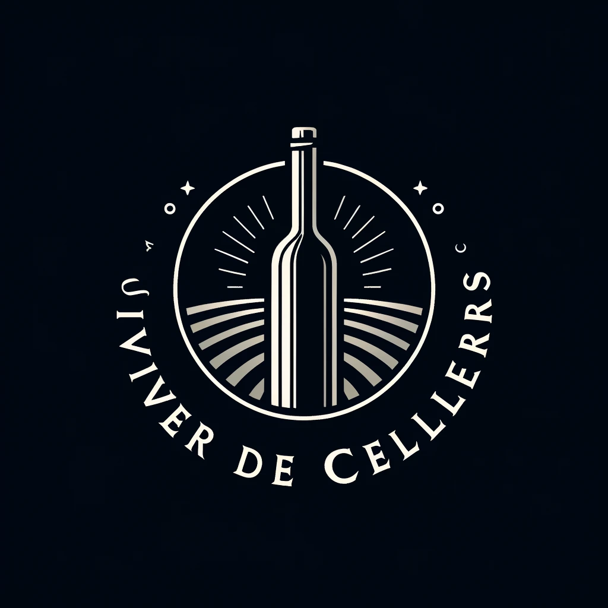

El vivero de bodegas de Vilafranca del Penedès se establece como un punto de referencia clave para el apoyo al emprendimiento en el sector vitivinícola. Su enfoque se centra en impulsar iniciativas innovadoras, sostenibles y saludables en la producción de vinos.
Este espacio ofrece una amplia gama de recursos y servicios especializados para facilitar el desarrollo de nuevos proyectos en el ámbito vitivinícola. Desde instalaciones modernas hasta equipamiento de última generación, el vivero proporciona todo lo necesario para llevar a cabo actividades vitivinícolas de manera eficiente y efectiva.
Además de las infraestructuras físicas, el vivero de bodegas también se destaca por su compromiso con la transferencia de conocimientos técnicos y de gestión. Se brindan programas de formación y asesoramiento personalizado para ayudar a los emprendedores a adquirir las habilidades necesarias y afrontar los desafíos del mercado vitivinícola.
Una de las características distintivas del vivero es su énfasis en fomentar la colaboración entre emprendedores. Se promueven espacios de interacción y networking donde los profesionales del sector pueden compartir ideas, experiencias y recursos. Esta colaboración fomenta la sinergia y el intercambio de conocimientos, contribuyendo así a la innovación y al desarrollo continuo del sector.